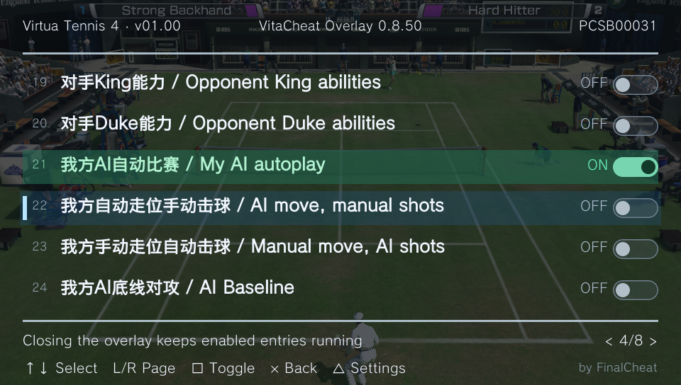

PLAYSTATION VITA · CURRENT PROJECT
VitaCheat
Overlay.
Your cheats. A clearer view.
Open a full-screen list in your game, select a cheat, and press Square.
Your familiar .psv codes, with an interface that is easier to use.
Captured on PS Vita

L+SELECTOpen the overlay
01
Read .psv files directly
Share vitacheat/db, with UTF-8 and GBK support.
02
Five menu languages
English, Simplified/Traditional Chinese, Japanese, Korean, or follow the system.
03
Controller-first controls
Square toggles, L/R pages. Configure opacity and the opening shortcut.
THE CODE REFERENCE
Every code,
clearly explained.
The original PDF's formats, fields, and examples, organized for the web.
From direct writes and pointers to modules, buttons, and conditions.
THE ORIGINAL · DOWNLOADS PRESERVED
PSVITACHEAT Z06
The original tool and its documentation remain available. Use the original download links for the complete files and user manuals.
Original download 01Baidu NetdiskOriginal PSVITACHEAT Z06 files
Original download 02Google DrivePlugin files, examples, and user manuals
Z06 is a legacy version; its original site specifies firmware 3.65 and later.Formats and version differences